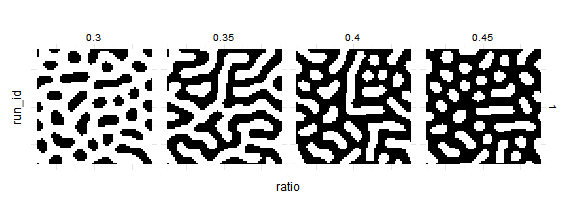

Agents and Patches
While step_measures and run_measures (see Fire experiments) is good enough for aggregate measures, sometimes we need to measure values for each agent individually.
Turtles and Links
Example below shows usage of agents_after element to read the network structure from Netlogo Preferential attachment model (Wilensky, 2005).
To get data about agents use agents_after argument with a list of agents variables and type of agent (turtles and links in this example).
Element agents_before is analogous tp agents_after - it just gets the data before model runs.
experiment <- nl_experiment(
model_file = file.path(nl_netlogo_path(),
"models/Sample models/Networks/Preferential attachment.nlogo"),
iterations = 50,
agents_after = list(
vertices = agent_set(
vars = c("who", "xcor", "ycor"),
agents = "turtles"),
edges = agent_set(
vars = c(e1 = "[who] of end1", e2 ="[who] of end2"),
agents = "links")
),
repetitions = 2,
random_seed = c(42, 69)
)result <- nl_run(experiment)
#> Warning: Parameter sets not defined. Using default parametersThe data about individual agents are now stored in result$agents_after$edges and result$agents_after$vertices. To join the data with parameter sets use nl_get_result(result, type = "agents_after", sub_type = "edges")
With igraph package one can recreate the graph structure from agents’ data:
library(igraph, quietly = TRUE, warn.conflicts = FALSE)
glist <-
lapply(
1:experiment$run_options$repetitions,
function(i){
g_edges <- subset(result$agents_after$edges, run_id == i)
g1 <- graph.data.frame(g_edges, directed = FALSE)
V(g1)$size <- sqrt(degree(g1))*6
V(g1)$label <-
ifelse(as.numeric(V(g1)$name) < 4, as.numeric(V(g1)$name), NA)
g1
}
)par(mfrow=c(1,2), mai=c(0,0,0,0))
for(g1 in glist) {
plot.igraph(g1, margin = 0,
vertex.label.font = V(g1)$size * 0.07,
vertex.label.color = "white",
vertex.color="darkseagreen4",
edge.color = "gray",
vertex.frame.color="#ffffff",
edge.curved=.1
)
}

Patches
Getting patches information is analogous to reading agents’ data. Example below shows usage of patches_after element to read the fur patterns from Netlogo Fur model (Wilensky, 2003).
experiment2 <- nl_experiment(
model_file = file.path(nl_netlogo_path(),
"models/Sample Models/Biology/Fur.nlogo"),
iterations = 20,
param_values = list(
ratio = c(0.3, 0.35, 0.4, 0.45)
),
patches_after = list(
patches = patch_set(
vars = c("pxcor", "pycor", "pcolor"),
patches = "patches"
)
),
random_seed = 2
)result2 <- nl_run(experiment2)dat <- nl_get_result(result2, type = "patches_after", sub_type = "patches")
str(dat, vec.len = 2)
#> 'data.frame': 14884 obs. of 6 variables:
#> $ ratio : num 0.3 0.3 0.3 0.3 0.3 ...
#> $ param_set_id: int 1 1 1 1 1 ...
#> $ pxcor : num -30 -29 -28 -27 -26 ...
#> $ pycor : num 30 30 30 30 30 ...
#> $ pcolor : num 0 9.9 9.9 9.9 9.9 ...
#> $ run_id : int 1 1 1 1 1 ...library(ggplot2)
nl_show_patches(result2, x_param = "ratio") +
ggplot2::scale_fill_manual(values = c("black","white"))